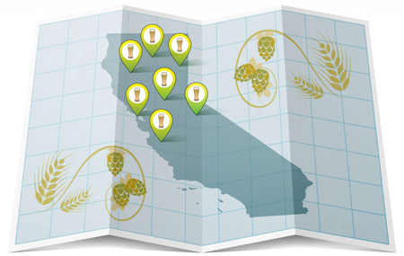
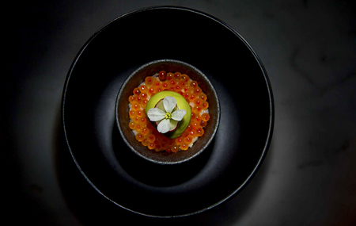

<div class="divider"></div>

<div class="credits">

  <div class="entry"><div>Reporter: </div>Sarah Fritsche  &bull; <a href="mailto:sfritsche@sfchronicle.com">sfritsche@sfchronicle.com</a>   &bull; <a href = "https://twitter.com/foodcentric" target="_blank">@foodcentric</a></div>

  <div class="entry"><div>Developer: </div>Emma O'Neill  &bull; <a href="mailto:eoneill@sfchronicle.com">eoneill@sfchronicle.com</a>   &bull; <a href = "https://twitter.com/emmaruthoneill" target="_blank">@emmaruthoneill</a></div>

  <div class="entry"><div>Editor: </div>Paolo Lucchesi  &bull; <a href="mailto:plucchesi@sfchronicle.com">plucchesi@sfchronicle.com</a>  &bull; <a href = "https://twitter.com/lucchesi" target="_blank">@lucchesi</a></div>

  <div class="entry"><div>Illustrator: </div>Chris Fong  &bull; <a href="mailto:cfong@sfchronicle.com">cfong@sfchronicle.com</a></div>

  <div class="entry"><div>Digital Producer: </div>Kimberly Chua  &bull; <a href="mailto:kchua@sfchronicle.com">kchua@sfchronicle.com</a>  &bull; <a href = "https://twitter.com/kimberlyachua" target="_blank">@KimberlyAChua</a>
  </div>

  <div class="entry">Have a suggestion to make this map better? E-mail The Chronicle's <a href="mailto:sfritsche@sfchronicle.com">Sarah Fritsche</a>.</div>
</div>

<div class="divider"></div>

<div class="dont-miss">
  <div class="story">
    <div class="padded">
    <a href="http://projects.sfchronicle.com/2017/brewery-map/" target="_blank">
      </img>
    </a>
      <div class="small">Ultimate brewery map</div>
    </div>
  </div>
  <div class="story">
    <div class="padded">
    <a href="http://projects.sfchronicle.com/2016/top-100-restaurants/" target="_blank">
      </img>
    </a>
      <div class="small">Top 100 restaurants of 2016</div>
    </div>
  </div>
</div>

<footer class="nav-bottom">
  <a class="logo" href="http://www.sfchronicle.com">
    </img>
  </a>
</footer>
